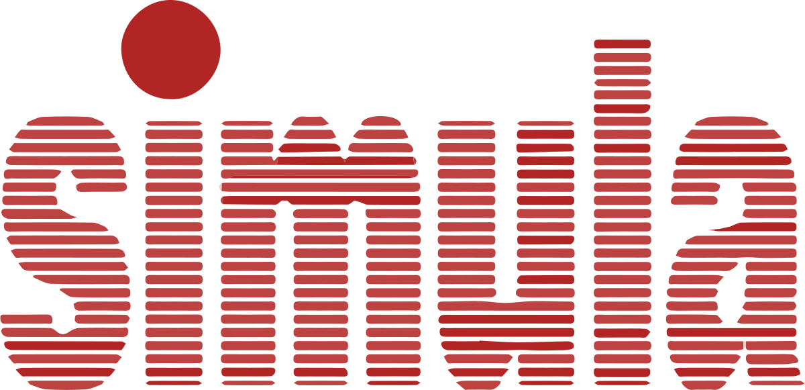
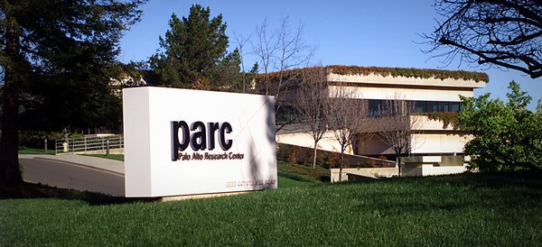

Los inicios de este paradigma de programación se remonta al lenguaje
de programación SIMULA, desarrollado por Kristen Nyagaard y Ole-Johan
Dahl en los años 60, el cual fue desarrollado en el centro de
computación noruego The Norwegian Computing Center.
Simula implementó por primera vez los conceptos como clases,
corrutinas y subclases (conceptos vigentes en la POO de hoy en día).
En la década de los setenta era muy común el problema de que eran
pocos los sistemas que lograban terminarse, eran muy pocos los que
cumplían con los requisitos iniciales y no todos terminan cumpliendo
los requerimientos según lo planificado. El problema consiste en el
cómo adaptar el software a nuevos requerimientos imposibles de haber
sido planificados inicialmente.

En realidad el hombre aprende de la experimentación, no de la
planeación, por lo cual los procesos usados en aquella época iban en
contrariedad con la naturaleza humana. Por lo cual la programación
orientada a objetos brindaba estos métodos de experimentación que no
exigen la planificación de un proyecto por completo antes de escribir
la primera línea de código, naturalizando así el proceso de desarrollo
del software.
A finales de la década de los 70 ’s, científicos del centro de
investigación en Palo Alto Xerox inventaron el lenguaje Smalltalk, el
cual dio respuesta al problema anterior (investigar no planificar).
Smalltalk fue el primer lenguaje orientado a objetos puro de los de su
tipo, este únicamente utiliza clases y objetos. El autor de la idea
fue el D. Parnas cuando propuso la disciplina de ocultar la
información. La idea de Parnas era encapsular cada una de las
variables globales de la aplicación en un solo módulo junto con sus
operaciones asociadas, para que solamente mediante estas operaciones
se podía tener acceso a esas variables.

En la década de los 80 ’s, Bjarne Stroustrup de AT&T Labs amplió el
lenguaje C para la creación de C++ que soporta la programación
orientada a objetos. En esta misma década se desarrollaron otros
lenguajes POO como objective C, Common Lisp Object System (CIOS),
Object Pascal, Ada entre otros. Futuras mejoras en herramientas y
lanzamientos comerciales de C++ por distintos fabricantes,
justificaron el enfoque hacia la programación orientada a objetos en
la comunidad del desarrollo de software.
En la década de los 90 ‘s, se consolidó la orientación a objetos como
una de las mejores maneras para la resolución de problemas. En 1996
surge un desarrollo llamado JAVA (extensión de C++). Su filosofía es
aprovechar el software existente. Facilitando la adaptación del mismo
a otros usos diferentes a los originales sin necesidad de modificar el
código ya existente. Hoy en día la Programación orientada a objetos es
sin duda el paradigma de programación que más ayuda a la resolución de
problemas y optimización del desarrollo de software gracias a su
naturaleza de ensayo y error.